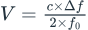

整体概括
一次磁暴、一个扇区、多类观测
研究 2025 年 11 月 12–13 日 Dst 最低 −214 nT 强磁暴在 60–180°E 扇区的电离层响应。作者联合 JPL GIM、区域 GNSS、北斗 GEO、COSMIC-2 掩星、测高仪、Swarm、HF Doppler 与 TIMED/GUVI，把 TEC、峰值密度与高度、热层成分和反射层运动放到同一事件时间轴上。它不是新算法论文，而是多仪器事件归因：用独立观测量约束“密度增加是否必须伴随整体抬升”这一机制问题。
对照原文证据
We investigate the ionospheric response to the 12–13 November 2025 intense geomagnetic storm (Dst minimum = - 214 nT) in the 60–180 ∘ E sector using a coordinated multi-instrument dataset comprising JPL GIM TEC, dense regional GNSS networks, continuous BeiDou GEO links, COSMIC-2 radio occultation, ground ionosondes, Swarm in-situ electron density, HF Doppler soundings, and TIMED/GUVI thermospheric composition observations.Interplanetary driving conditions and geomagnetic response during 11–13 November 2025.主结论：北强南弱，密度主导而非一致抬升
观测给出日侧主导的正相 TEC 风暴，北半球中低纬增强更强、持续更久。掩星、测高仪与 Swarm 的联合分析显示增强以密度为主：NmF2 与 foF2 增加，却没有扇区尺度一致、与密度增强同步的 hmF2 或 h′F2 抬升，这对“只靠抬升”的解释构成约束。UT 1–6 有跨赤道的大尺度行进电离层扰动，而 HF Doppler 振荡在 UT 6–24 才达到最强，说明积分电子含量与反射高度动力学并不同步。
对照原文证据
The observations reveal a dayside-dominant positive TEC storm with pronounced hemispheric asymmetry, where Northern Hemisphere mid-to-low latitudes exhibit stronger and longer-lasting enhancement than the Southern Hemisphere.Joint analysis of radio occultation, ionosonde, and Swarm data indicates that the enhancement is density-dominated with NmF2 and foF2 increases but with no coherent, sector-scale peak-height uplift in hmF2 or h ′ F2, posing challenges for uplift-only electrodynamic interpretations.Coherent large-scale traveling ionospheric disturbances propagate across the equator during UT 1–6, while HF Doppler oscillations maximize later during UT 6–24, revealing a timing offset between integrated TEC responses and reflection-height dynamics.证据强度：是约束，不是唯一因果证明
这些结果更像一组可检验约束，而不是机制的唯一证明。作者自己把形态与半球对比描述为可能部分依赖事件、背景态和经度/地方时配置，并在讨论中把 PPEF、扰动发电机、中性风和成分变化并列为候选过程；原文也明确不排除瞬态或局地抬升。因此应把“密度主导、无一致抬升”当作多仪器共同支持的观测事实，把“为什么北强南弱”当作尚不能定量分离的解释问题。
对照原文证据
At the same time, the detailed spatiotemporal morphology and hemispheric contrast are expected to depend on storm forcing, background state, and local-time/longitude configuration, and are therefore likely to be partly event-specific.One plausible interpretation is that PPEF-driven transport and fountain intensification rapidly enhanced low-latitude plasma densities, while other effects (e.g., evolving neutral winds, emerging disturbance dynamo electric fields, and storm-time composition changes that alter loss rates) acted to limit persistent, sector-scale hmF2 uplift at mid-to-low latitudes.This does not exclude transient or localized uplift signatures, but it indicates that a persistent height rise is not the dominant sector-scale signature during the main phase.Ambiguities: (i) limited Northern Hemisphere GUVI coverage prevents a direct interhemispheric comparison of storm-time composition changes; and (ii) the relative contributions of electric-field versus neutral-wind asymmetries to the hemispheric contrast cannot be quantitatively separated with the available composition and electrodynamic constraints.Research gap
积分 TEC 分不开抬升、增密与成分
作者指出的第一个缺口是观测量歧义：同一个正相 TEC 增强，可能来自 F 层抬升到复合率更低的区域，也可能来自各高度电子密度真实增加，或两者兼有；这些情形对物理机制和在其他高度、其他地点的预测含义完全不同。仅用柱积分 TEC 无法区分，而单个事件的峰值高度观测又远少于 TEC 观测，机制解释容易默认落到“抬升叙事”。
对照原文证据
However, distinguishing among these mechanisms using integrated TEC observations alone is problematic because different physical processes can produce similar signatures in column-integrated electron contentSpecifically, a positive TEC enhancement may arise from F-layer uplift into lower-recombination regions, from genuine density increases at all heights, or from some combination—yet these scenarios have fundamentally different implications for the underlying physics and for predictions at other altitudes or locations.observational constraints on height changes during individual events remain sparse relative to TEC measurements半球不对称常见，但缺系统化多仪器刻画
第二个缺口是半球不对称虽常被观测到，却少有系统的多仪器刻画；观测覆盖不均本身还会掩盖扰动的真实空间结构，使“南北差异”难以与“采样差异”分开。本文的回应是在 60–180°E 同时使用南北两侧的 GNSS 网、固定几何的北斗 GEO 链路，以及掩星、测高仪、Swarm 和 GUVI，先把不对称写成可复核的观测约束，再讨论电动力学与成分各自的可能贡献。
对照原文证据
Third, hemispheric asymmetries in storm-time ionospheric responses are commonly observed but often lack systematic multi-instrument characterization.or simply from unequal observational coverage that obscures the true spatial structure of the disturbance.within the 60–180 ∘ E longitude sector spanning China, the West Pacific, and Australia.Unlike medium-Earth-orbit (MEO) satellites whose ionospheric pierce points drift with orbital motion, BeiDou GEO satellites maintain fixed positions relative to the Earth, providing temporally continuous observations along stable ground-to-satellite paths.算法主线

原图由 arXiv 加载；若未显示，可打开下方原图链接。
跟着原图读
- 先读 (a) 的几何与分带
星标 C01–C05 是 GEO 卫星，彩色方块是穿刺点；虚线是统计分带，不是纬度边界或磁纬。先确认每个面板对应哪一带，避免把 (b) 的北纬峰值错配到南纬。
- 再看 (b)(c) 与 (e)(f) 的峰值时刻和尾部
北纬两带在 02–04 UT 出现尖峰，随后仍有较宽的正值尾部；(e)(f) 的包络峰值约在 04–06 UT，较北纬靠后且更窄，随后较快接近零、部分转负。峰值时刻与正相持续时间是两件事：北侧正相可持续 12 小时以上，南侧约 4–6 小时。曲线族内部的分散度说明单链路差异，读图应看包络而不是挑一条最亮的线。
- 最后核对纵轴与单位
五个面板纵轴都是 TECU，但曲线族是斜路径相对变化；数值可达数百 TECU，不能当作 VTEC。线色只区分链路，不编码误差或置信度。
不能从图读出绝对 VTEC 或南北半球真实电子密度；ΔSTEC 以各弧段起点为零，负值只表示低于该弧段起点，不等于低于气候背景。图中峰值数值是目视读数，精确值应回正文时间序列，不能把曲线包络当作统计显著性。
GIM 背景：27 天滑动中位数加四分位过滤
全球背景取 JPL GIM 在风暴日前后各 13 天、共 27 天滑动窗口的中位数，并对每个格点和每个 UT 小时沿年积日方向做四分位稳健过滤：落在 Q1−1.5×IQR 到 Q3+1.5×IQR 之外的样本剔除，再取剩余样本中位数。这样得到的是“同日同时刻的典型值”，用于计算相对扰动百分比，而不是把某个平静日硬套到所有经度。
对照原文证据
The quiet background is defined as the median TEC value computed over a sliding window of \pm 13 days centered on the storm date (i.e., a 27-day window spanning approximately one solar rotation), following established practices for storm-time TEC perturbation characterizationSamples falling outside the interval [Q_{1}-1.5\times\mathrm{IQR},\,Q_{3}+1.5\times\mathrm{IQR}] are flagged as outliers and excluded; the median of the remaining samples is then taken as the quiet-time background \mathrm{TEC}_{\mathrm{quiet}} .GNSS TEC：15° 截止、350 km 薄壳、周跳与断弧规则
双频 GNSS 取 15° 高度截止角以压低多路径和映射函数误差，电离层穿刺点假定在 350 km 薄壳。质量控制用几何无关组合与 Melbourne–Wübbena 组合，阈值分别为 0.5 m 和 5 m；连续历元间隔超过 300 s、相邻 TEC 跳变超过 10 TECU 或卫星 PRN 改变时强制断弧。作者明确没有扣除硬件延迟，因为后续只用相对变化量，缓慢偏差会在去趋势中被吸收。
对照原文证据
Ionospheric TEC values are derived from dual-frequency GNSS observations using established processing procedures ( Hernández-Pajares et al., 1999 ; Pi et al., 1997 ) . The processing adopts an elevation angle cutoff of 15 ∘ to minimize multipath and mapping function errors at low elevations. The ionospheric pierce point (IPP) altitude is assumed to be 350 km, consistent with typical F-region peak heights and standard thin-shell ionospheric models.Quality control procedures include cycle-slip and outlier detection based on the geometry-free (GF) combination and the Melbourne–Wübbena (MW) combination. Detection thresholds are set at 0.5 m for the GF combination and 5 m for the MW combination; epochs flagged as containing cycle slips or gross errors are rejected, and the affected observation arcs are re-segmented accordingly. This approach effectively prevents anomalous observations from contaminating subsequent TEC retrieval and perturbation extraction.Observation arc segmentation follows these criteria: arcs are terminated and restarted when (1) the time gap between consecutive epochs exceeds 300 s, (2) the TEC jump between consecutive epochs exceeds 10 TECU, or (3) the satellite PRN changes. These conditions prevent pseudo-disturbances arising from data gaps, cycle slips, or satellite switches from being misinterpreted as geophysical signals.Because the primary analysis focuses on relative TEC variations (e.g., dTEC and \Delta STEC) rather than absolute TEC values, hardware delay biases (differential code biases, DCBs) are not explicitly removed from the slant TEC (STEC) calculations. The dTEC extraction procedure described below inherently removes slowly varying biases through detrending, isolating the perturbation signals of interest; additional notes on relative TEC metrics are provided in Supporting Information Text S1.北斗 GEO：弧段起点归一化的相对斜 TEC
北斗 GEO 链路不追求绝对标定，因为静地几何下接收机与卫星硬件延迟在短时间尺度上难以可靠分离。作者对每条连续站–星弧段做起点归一化：以弧段内第二个有效采样为参考历元，令该时刻的相对变化为零，之后所有值都相对它计算。于是 ΔSTEC 是沿斜路径的相对变化，既不是 VTEC，也不是“相对平静背景”的扰动；斜路径长，量级超过常见 VTEC 并不奇怪。
对照原文证据
For the BeiDou GEO satellite observations, we focus on relative TEC variations rather than attempting absolute TEC calibration, because receiver and satellite hardware delays cannot be reliably separated on short timescales for GEO geometries ( Liu et al., 2019 ) . To obtain a reproducible relative TEC change metric ( \Delta STEC), we apply a start-point normalization procedure to each continuous station–satellite observation arc.Let \mathrm{STEC}(t) denote the slant TEC time series for a given arc. The reference starting epoch t_{\mathrm{ref}} is selected as the second valid sample point within the arc (to mitigate edge effects at the arc boundary). The normalized relative TEC change is then defined as:This definition ensures \Delta\mathrm{STEC}(t_{\mathrm{ref}})=0 by construction, allowing inter-station and inter-latitude comparisons of the temporal morphology of TEC changes without the ambiguity introduced by unknown absolute biases. No hardware delay correction is applied; the analysis focuses solely on relative variations during the storm period. Accordingly, \Delta STEC should be interpreted as a relative slant TEC change from the arc-start reference epoch rather than an absolute TEC value (Supporting Information Text S1).The arc-start normalization approach used for \Delta STEC computation emphasizes relative changes while avoiding absolute TEC calibration, which requires careful treatment of differential code biases (DCBs) that can be challenging to determine reliably for GEO satellites. This approach is well-suited for characterizing storm-time variations but does not provide absolute TEC values.HF Doppler 与 ROTI：有参数定义，但不混用物理量
HF Doppler 使用 Meridian Project L2 产品第 7、8 列的频移与等效速度，质量控制要求 SNR 不低于 10 dB、谱宽不超过 2 Hz，并以 6 倍 MAD 剔除速度异常；展示用 2 分钟滑动中位数，统计量仍用未平滑数据。ROTI 只用原文定义：30 秒采样的 VTEC 变化率在 5 分钟窗内的标准差，窗内至少 50% 有效样本；source.equations 没有给出独立原式，本文不另造公式。
对照原文证据
We utilize the Meridian Project Level 2 (L2) HF Doppler data product, which provides pre-computed values for each epoch including the Doppler frequency shift \Delta f (Hz), equivalent Doppler velocity V (m s -1 ), spectral width W (Hz), and signal-to-noise ratio SNR (dB). The \Delta f and V values used in this study correspond to data columns 7 and 8 of the L2 files, respectively.Quality control criteria for the HF Doppler data include a signal-to-noise ratio (SNR) threshold of \geq 10 dB, a spectral width limit of W\leq 2 Hz, and a requirement that QualityFlag = 1 where this flag is provided in the data product. Additionally, robust outlier rejection is applied to the V time series: samples deviating from the median by more than 6 times the median absolute deviation (MAD) are rejected, with corresponding \Delta f , W , and SNR values at the same epochs also removed.For visualization purposes, a 2-min sliding median smoothing is applied to \Delta f and V .The Rate of TEC Index (ROTI) quantifies small-scale ionospheric irregularity activity through the temporal variability of TEC ( Pi et al., 1997 ; Cherniak and Zakharenkova, 2015 ) . In this study, ROTI is computed as the 5-min running standard deviation of the rate of change of VTEC (ROT), using 30-s GNSS sampling and requiring at least 50% valid samples in each window. VTEC is obtained from STEC using a standard single-layer mapping function with a 350-km ionospheric shell height. Additional formulation details are provided in Supporting Information Text S1.关键公式
百分比扰动：把不同背景放到同一相对尺度
原文的百分比扰动式用风暴时 TEC 与同时同地背景中位数之差除以背景，再乘百分之百。它能在背景电子含量不同的区域之间比较扰动量级，也直接区分正相与负相；缺点是分母随地方时和纬度变化，同样的绝对增量在高背景低纬会被压小，在低背景区域会被放大。解读文中“超过 50%”一类阈值时，必须同时看绝对 TEC 图和背景定义，不能把它当成全球统一的物理强度。
对照原文证据
This normalized metric facilitates comparison of perturbation magnitudes across regions with different background TEC levels and enables identification of positive (enhancement) and negative (depletion) ionospheric storm phases.Large-scale positive perturbations emerged across dayside low-to-mid latitudes, with relative TEC enhancements exceeding 50% in multiple regions and locally approaching or exceeding 100%, consistent with super-fountain effects reported during other intense stormsdTEC：先去趋势再低通，参数会塑造扰动振幅
原文的 dTEC 式把斜 TEC 减去 Savitzky–Golay 平滑背景，平滑用二阶多项式、121 个样本窗；按 30 秒采样约合 1 小时。随后用四阶 Butterworth 低通保留 40 分钟以上周期，并以 filtfilt 前后向零相位滤波避免相位偏移。这里有两个实现边界：窗口与截止周期会改变提取到的振幅和周期；零相位滤波需要整段数据的前后文，不是天然可流式在线使用。
对照原文证据
Within each continuous observation arc (segmented as described in Section 3.2 ), a slowly varying background trend is constructed using Savitzky–Golay (SG) smoothing with a second-order polynomial and a window length of 121 samples. At the standard 30 s GNSS sampling interval, this window corresponds to approximately 1 hour, capturing background TEC variations associated with diurnal changes and satellite motion while preserving shorter-period fluctuations. The detrended perturbation sequence is defined as:The filter employs a 4th-order Butterworth low-pass design with a cutoff period of 40 min, retaining only perturbations with periods exceeding 40 min. Bidirectional zero-phase filtering (forward-backward, implemented via filtfilt ) is applied to prevent phase distortion.The Savitzky-Golay detrending and Butterworth low-pass filter parameters (window length, cutoff period) influence the extracted disturbance amplitudes and periods; while the 40-minute cutoff retains LSTID signatures, different parameter choices could emphasize different spatial scales.ΔSTEC 与 Doppler：相对量与等效速度的单位陷阱
ΔSTEC 式把观测时刻的斜 TEC 减去弧段参考时刻值，构造上让参考点为零，因此只能读相对变化；负值也不等于绝对 TEC 低于气候背景，可能只是从风暴增强后的弧段起点回落。Doppler 式用光速乘频移，再除以两倍发射频率，得到视线方向等效速度；产品文件头的发射频率以 MHz 给出，代入前必须换成 Hz，否则速度会差多个数量级。它反映反射路径长度的变化率，不能直接当作中性风。
对照原文证据
This definition ensures \Delta\mathrm{STEC}(t_{\mathrm{ref}})=0 by construction, allowing inter-station and inter-latitude comparisons of the temporal morphology of TEC changes without the ambiguity introduced by unknown absolute biases. No hardware delay correction is applied; the analysis focuses solely on relative variations during the storm period. Accordingly, \Delta STEC should be interpreted as a relative slant TEC change from the arc-start reference epoch rather than an absolute TEC value (Supporting Information Text S1).Because \Delta STEC is defined by arc-start normalization rather than a quiet-time baseline, such negative excursions do not necessarily imply that absolute TEC falls below pre-storm climatological conditions; they may also reflect a decline from a storm-enhanced arc-start level.where c is the speed of light and f_{0} is the transmitter frequency (in MHz, provided in the L2 file header). This relationship captures the frequency shift arising from temporal changes in the ionospheric reflection path length. The transmitter–receiver link geometry (station coordinates) is also provided in the L2 file header; the analysis compares temporal evolution across different links without requiring precise reflection point reconstruction.HF Doppler frequency shifts are primarily sensitive to vertical motions and refractive index variations near the reflection height (typically in the F-region bottomside to peak vicinity), making them useful tracers of wave-induced height fluctuations and smaller-scale perturbationsGIM 百分比扰动：用同时同地背景中位数归一化
风暴 TEC 相对同时同地 27 天滑动中位背景的百分比偏差。它把不同背景电子含量放到相对尺度，便于识别正相与负相，但分母随地方时、纬度和季节变化，不能当作绝对强度或跨区域可比的物理量。
符号与实现提醒
- TEC_storm
- 风暴期间观测到的 TEC，单位 TECU。
- TEC_quiet
- 同一格点、同一 UT 的安静期背景中位数，单位 TECU；由 27 天窗与四分位过滤得到。
- ΔTEC%
- 相对扰动，百分数；乘 100 后无量纲。
背景窗包含风暴日前后各 13 天，强扰动季可能污染中位数，原文用 IQR 剔除缓冲。百分比对低背景区域会放大同样的绝对变化；读“超过 50%”时必须同时核对绝对 TEC 图。
dTEC：减去 Savitzky–Golay 慢变背景后的扰动
对每条连续弧段的斜 TEC 序列减去二阶多项式、121 样本窗的 SG 平滑值，得到去趋势扰动；再经 40 分钟截止的四阶 Butterworth 零相位低通，保留约 40–180 分钟的主导 LSTID 周期。
符号与实现提醒
- STEC(t)
- t 时刻的斜 TEC，TECU。
- STEC_SG(t)
- 同一弧段的 SG 平滑背景，TECU；窗长约 1 小时（30 秒采样）。
- dTEC(t)
- 去趋势后的扰动，TECU；可正可负。
SG 窗和低通截止会改变振幅与周期；filtfilt 前后向滤波需要整段数据，存在边缘效应且非因果，不能直接用于实时流。原文的 40 分钟截止保留 LSTID，但会压低更短周期扰动。
北斗 ΔSTEC：以弧段起点为零的相对斜 TEC
对每条连续站–星弧段，取第二个有效采样为参考历元，之后所有斜 TEC 减去该值。构造上参考点为零，用于比较时间形态和纬度带差异，不做绝对标定。
符号与实现提醒
- STEC(t)
- 弧段内 t 时刻的斜 TEC，TECU。
- t_ref
- 弧段参考历元，取第二个有效采样以减小边界效应。
- ΔSTEC(t)
- 相对斜 TEC 变化，TECU；参考时刻恒为零。
未扣硬件延迟，不能解释为绝对 VTEC；斜路径长，数值可超过 VTEC。负值只表示低于本弧段起点，不等于低于气候背景。不同弧段起点不同，跨站比较要固定时间窗与纬度带。
HF Doppler 等效速度：频移到视线速度的换算

用光速乘多普勒频移，再除以两倍发射频率，得到反射路径长度变化率对应的等效视线速度。它把 Hz 的频移换成 m/s，便于和垂直运动量级比较，但仍是路径积分效应。
符号与实现提醒
- V
- 等效 Doppler 速度，m/s；沿发射机–反射点–接收机路径的等效值。
- c
- 光速，约 3×10^8 m/s。
- Δf
- 多普勒频移，Hz。
- f0
- 发射频率，Hz；L2 文件头以 MHz 给出，代入前需换算。
等效速度不是中性风，也不是反射点垂直漂移的唯一解；反射高度、入射角和水平梯度都会影响。图中红蓝曲线的正负号约定需与数据列核对；2 分钟中位数只用于展示，统计用未平滑数据。
实验怎么做
观测战役：扇区、主相窗口与三日基线
观测覆盖研究扇区，从中国到澳大利亚的南北半球中低纬；主相窗口定义为 12 日 UT 0–6，即太阳风–磁层–电离层耦合最强、扇区内扰动最明显的时段。地面资料包括 CMONOC、IGS、GEONET、AGGA、GDMS 等网络，提供跨南北半球的密集 GNSS 采样。比较采用事件日与前后平静日的观测基线。
对照原文证据
Multiple GNSS receiver networks provide dense spatial sampling across the study sector for deriving TEC and its perturbations. In China and surrounding regions, we primarily utilize data from CMONOC GNSS stations, which offer high spatial density at low-to-mid latitudes enabling detailed characterization of TEC temporal evolution and latitudinal structure during the storm. Additional stations from IGS supplement the CMONOC coverage and extend observations beyond the Chinese mainland ( Schaer et al., 1998 ; Hernández-Pajares et al., 1999 ) .For the ionospheric response analysis presented in subsequent sections, we define the storm main phase window as UT 0–6 on 12 November 2025, corresponding to the interval of strongest solar wind–magnetosphere–ionosphere coupling and most pronounced ionospheric disturbances within the study sector.In Japan, GEONET provides high-density coverage for precisely resolving TEC spatial distributions in the northwestern Pacific mid-latitude region. In Australia, AGGA supplies observations from the Southern Hemisphere mid-latitudes, enabling cross-hemispheric comparative analysis. In the Taiwan region, the GPS Data Management System (GDMS) network further enhances sampling at the northern boundary of the equatorial ionization anomaly (EIA).To examine the storm-time ionospheric response from a topside perspective, Swarm A/B/C EFI L1B electron density (Ne) data were analyzed for UT 0–6 within the 60–180 ∘ E sector on three consecutive days: 11 November (pre-storm), 12 November (storm main phase), and 13 November (post-storm) (Figure 8 ).对照设计：覆盖不均本身就是解释的一部分
这组资料不是均匀网格：掩星按 0.5 小时、5° 纬度分箱，主相前后中低纬样本较连续，但高纬和部分时段稀疏；GUVI 北半球覆盖不足，成分分析只能集中在 0–30°S；测高仪主要位于中国。于是“南北不对称”同时包含真实响应与采样几何的差异。作者用多源一致性降低这一风险，但没有把电场地与中性风场的相对贡献定量分离。
对照原文证据
COSMIC-2 RO profiles yielding NmF2 and hmF2 are organized into a latitude–time grid with cell dimensions of \Delta t=0.5 h and \Delta\mathrm{lat}=5^{\circ} . The number of RO profiles contributing to each grid cell is recorded to assess sampling density and statistical reliability. This gridding enables visualization of the spatiotemporal distribution of F2-layer peak parameters while accounting for the irregular sampling inherent to the RO technique.Given the limited Northern Hemisphere coverage during the selected observation periods (due to GUVI orbital geometry), the composition analysis focuses on the Southern Hemisphere, specifically the latitude range 0–30 ∘ S within the study longitude sector. This regional focus constrains the thermospheric composition context for the observed hemispheric asymmetry in ionospheric response.Ambiguities: (i) limited Northern Hemisphere GUVI coverage prevents a direct interhemispheric comparison of storm-time composition changes; and (ii) the relative contributions of electric-field versus neutral-wind asymmetries to the hemispheric contrast cannot be quantitatively separated with the available composition and electrodynamic constraints.Despite these limitations, the multi-instrument consistency—with TEC, in-situ Ne, RO profiles, ionosondes, and HF Doppler all showing coherent storm-time responses—provides confidence in the findings. The combination of global (GIM), sector-scale (BeiDou GEO), and local (ionosonde, HF Doppler) observations enables cross-validation and mechanistic interpretation that would not be possible from any single data source alone.提升与证据
全球 GIM：日侧正相风暴，局地超过 100%
主相前，全球相对扰动大多在 ±20% 以内，研究扇区没有系统性结构。12 日 01–06 UT，日侧低中纬出现大范围正扰动，多个区域超过 50%，局地接近或超过 100%。进入恢复相后，北半球中低纬仍以增强为主，南半球澳大利亚扇区快速衰减并更早转为弱扰动或负扰动，正负结构在同一扇区并存。
对照原文证据
During the pre-storm interval (11 November 23:00–12 November 00:00 UT), global TEC perturbations remained modest, with relative changes predominantly within \pm 20% and only scattered positive and negative perturbations at high latitudes and some mid-latitude regions (Figure 3 ). The 60–180 ∘ E sector (China–West Pacific–Australia) exhibited no systematic disturbance during this period, indicating that the ionosphere was close to its background state.Large-scale positive perturbations emerged across dayside low-to-mid latitudes, with relative TEC enhancements exceeding 50% in multiple regions and locally approaching or exceeding 100%, consistent with super-fountain effects reported during other intense stormsAs the storm entered its main phase (approximately 12 November 01:00–06:00 UT)Concurrently, a clear north-south hemispheric asymmetry emerged: Northern Hemisphere low-to-mid latitudes remained predominantly enhanced, whereas the Southern Hemisphere Australian sector experienced rapid decay of the positive storm and an earlier transition to weak or negative perturbation states. This asymmetry produced a complex spatial structure of coexisting positive and negative perturbations within the sector during the recovery phase.北斗 GEO：北纬峰值 150–250 TECU，南纬 50–150 且衰减更快
按五个纬度带统计，北纬 30–50° 与 15–30° 的 ΔSTEC 峰值一般达 150–250 TECU，峰值出现在 UT 02–04，早于该扇区 EIA 的日变化极大值；南纬 −30–−15° 与 −50–−30° 幅度一般只有 50–150 TECU，正相持续约 4–6 小时，而北侧正扰动可持续 12 小时以上。作者强调 ΔSTEC 是相对斜 TEC，不能与 VTEC 数值直接比较。
对照原文证据
Northern Hemisphere mid-to-low latitudes (30–50 ∘ N and 15–30 ∘ N) displayed the most pronounced positive-phase perturbations, with peak \Delta STEC values generally reaching 150–250 TECU and showing good consistency among individual station-satellite linksNotably, the \Delta STEC peaks in these two latitude bands occur during UT 02:00–04:00 (Figure 4 b–c), earlier than the typical EIA diurnal maximum time in this longitude sector.Southern Hemisphere mid-latitudes ( - 30– - 15 ∘ and - 50– - 30 ∘ ) showed positive \Delta STEC enhancements during the early main phase, but with notably smaller amplitudes (generally 50–150 TECU) and shorter durations compared to the Northern Hemisphere.The pronounced hemispheric asymmetry, with the Northern Hemisphere positive storm stronger and longer-lasting than its Southern counterpart, is a key feature of this event. BeiDou GEO observations show peak \Delta STEC of 150–250 TECU in Northern mid-to-low latitudes (30–50 ∘ N) with positive perturbations persisting for > 12 hours, whereas Southern mid-latitudes ( - 30 to - 50 ∘ S) exhibited peak values of only 50–150 TECU with the positive phase lasting approximately 4–6 hours before rapid decay (Figure 4 ).垂直结构：密度上去，高度没有同步上去
掩星给出 NmF2 在主相中低纬显著增强，部分站测高仪 foF2 达平静值的 1.5–2 倍；但 hmF2 大多分布在约 220–320 km，没有与密度增强同步的扇区尺度抬升。少数剖面在 20°S 附近、04 UT 前后出现 350–400 km 的瞬态增高，却是局地、不同步的。测高仪的 h′F2 是虚高，受射线传播影响，不能与掩星的 hmF2 当作同一个量。
对照原文证据
Ground-based ionosonde observations from multiple stations in China provide independent validation of the vertical structure response ( Reinisch and Galkin, 2011 ; Burešová et al., 2014 ) (Figure 10 ). Multiple stations recorded notable foF2 increases during the early main phase , with peak values at some stations reaching 1.5–2 times their quiet-time levels, indicating significant F2-layer peak electron density enhancement at regional scales. This result shows good temporal and spatial consistency with GNSS TEC, RO-derived NmF2, and Swarm topside Ne enhancements.Most RO events show F2-layer peak heights distributed mainly in the \sim 220–320 km range, with limited temporal variation. A small number of profiles exhibit transient height increases (e.g., a cluster reaching \sim 350–400 km near \sim 20 ∘ S around UT \sim 04), but these are localized and not synchronized across latitude/time bins.Radio occultation (RO) retrievals of F2-layer peak height (hmF2) and peak electron density (NmF2) within the 60–180 ∘ E sector are shown in Figure 9 ( Lei et al., 2007 ; Yue et al., 2010 ) . The latitude-time scatter distribution reveals that during the main-phase interval (UT 0–6), NmF2 exhibited significant enhancement in the mid-to-low latitude region, with the enhancement band showing latitudinal continuity that corresponds well with the TEC positive storm and Swarm topside Ne enhancement zones.Furthermore, virtual height h ′ F2 from ionograms differs from true hmF2 due to ray propagation effects, particularly under disturbed conditions with strong gradients, whereas the RO-derived hmF2 provides more direct peak height estimates but with sparse spatial sampling.扰动与动力学：LSTID 早、Doppler 晚，ROTI 只局部增强
主相 UT 1–6，纬–时 keogram 显示相干斜带，主导传播为南→北，按代表性条带斜率粗估经向相速度约 600–950 m/s。ROTI 在多数点仍低，只有局地绿黄红增强，说明相干波前不是全域不规则体。到 UT 6–24，多站 Doppler 振荡反而更强更持久，与 TEC/LSTID 的早峰值形成时间错位。
对照原文证据
Coherent diagonal bands during UT \sim 1–6 highlight storm-time LSTID activity with a dominant south-to-north (Southern-to-Northern Hemisphere) propagation signature; the stripe slopes correspond to meridional phase velocities of approximately 600–950 m/s based on a slope estimate from representative coherent bands (two annotated slope lines).To distinguish wave-like LSTID signatures from irregularity-related fluctuations, the Rate of TEC Index (ROTI) was computed as the 5-minute running standard deviation of the rate of change of VTEC ( Pi et al., 1997 ; Cherniak and Zakharenkova, 2015 ) (Figure 6 ). During the UT 1–6 interval, most observation points exhibited low ROTI values (dark blue), indicating that the background ionosphere was relatively smooth. However, localized regions showed elevated ROTI (green/yellow/red), suggesting storm-time enhancement of irregularity activity that was spatially structured rather than uniform.However, more significant and sustained Doppler disturbances typically appeared after UT 6:00 and extended to 24:00 .This “Doppler-strongest-phase-shifted-later” phenomenon forms an important contrast with the GNSS TEC/LSTID being strongest during the early main phase (UT 0–6)
原图由 arXiv 加载；若未显示，可打开下方原图链接。
跟着原图读
- 先看 (c) 的采样，再看 (a)(b)
中低纬每箱大约几个到十几个剖面，南北高纬明显少；(a)(b) 的空白与稀疏处不能解释为物理缺失。先确认增强带所在纬度/时段有足够样本。
- 再比较 (b) 的暖色带与 (a) 的色块
(b) 在约 3–5 UT 出现成片暖色，主要位于南纬约 10–25° 与北纬约 10° 附近，赤道带同期仍以蓝绿为主；增强呈南北两个暖色团，而不是沿赤道的一条带。(a) 却是红蓝相间的碎斑，没有沿纬度连续数小时的暖色带。因此这张图支持密度有组织增强、高度场没有组织抬升。
- 最后区分瞬态与扇区尺度
(a) 在约 20°S、04 UT 附近有少量深红色块，可对应局地瞬态增高；但它们是散点，不是跨纬度的同步带。读图不能把单格颜色当作全扇区高度变化。
不能从色标估读精确 NmF2 或 hmF2，不能把 (a) 的碎斑直接当作仪器噪声，也不能当作真实高度振荡；颜色受分箱与色标拉伸影响。更关键的是，这张图只支持“没有相干扇区尺度抬升”，不支持“任何时间任何地点都没有抬升”，也不提供因果机制。

原图由 arXiv 加载；若未显示，可打开下方原图链接。
跟着原图读
- 先看每个面板自己的双纵轴
左轴速度与右轴频移量纲不同，八个面板的速度范围从约 ±10 到 ±100 m/s 不等；不能用曲线视觉高度跨站比较，必须读右上角的 STD 数字。
- 再按时间找振荡包络
00–06 UT 多数链路只有小幅起伏或间歇尖峰；约 08–12 UT 之后出现成组的大幅正负摆动，持续到 18–24 UT。统计框里 6–24 UT 的速度标准差在八条链路都大于 0–6 UT，支持“后段更强”。
- 最后看红蓝是否同相
按原文的换算关系，速度与频移应同号、形状相似；图中若干大幅摆动处红蓝反相，提示产品列的正负号约定需要核对，不能直接把红线当独立风速。
Doppler 等效速度是反射路径长度的变化率，不是中性风，也不是垂直漂移的唯一解；2 分钟中位数只用于展示，统计用未平滑数据。图中没有反射点高度、入射角或风场真值，不能据此推断重力波源区或动量通量。
局限与追问
作者承认的边界：单事件、单扇区、覆盖不全
作者把研究定位为事件型：形态与半球对比可能部分依赖风暴强迫、背景态和地方时/经度配置。GUVI 北半球覆盖不足，使南北 O/N2 无法直接对比，成分解释主要依赖南半球 0–30°S；北斗 ΔSTEC 未扣硬件延迟，跨站比较存在基线不确定性。这些都是作者在正文和结论中明确写出的范围，不应被读成对所有磁暴、所有经度的普适规律。
对照原文证据
At the same time, the detailed spatiotemporal morphology and hemispheric contrast are expected to depend on storm forcing, background state, and local-time/longitude configuration, and are therefore likely to be partly event-specific.It should be noted that GUVI coverage in the Northern Hemisphere was limited during this observation window, precluding direct comparison of Northern versus Southern O/N 2 changes. The compositional interpretation for hemispheric asymmetry thus relies on Southern Hemisphere observations combined with theoretical expectations and seasonal climatology.Several observational limitations should be acknowledged when interpreting the results presented. First, limited GUVI data availability in the Northern Hemisphere during this event precludes direct O/N 2 comparison between hemispheres, confining compositional interpretation primarily to Southern Hemisphere observations. Additionally, without explicit hardware delay removal, the BeiDou \Delta STEC values represent relative changes from arc start rather than absolute TEC, which may introduce baseline uncertainties for cross-station comparisons.Given the limited Northern Hemisphere coverage during the selected observation periods (due to GUVI orbital geometry), the composition analysis focuses on the Southern Hemisphere, specifically the latitude range 0–30 ∘ S within the study longitude sector. This regional focus constrains the thermospheric composition context for the observed hemispheric asymmetry in ionospheric response.方法学追问：滤波、虚高与因果分离
滤波参数会改变提取到的扰动振幅与周期，40 分钟截止保留 LSTID，但换参数就会强调不同尺度；零相位 filtfilt 依赖整段前后数据，直接搬到实时流会引入未来样本，工程上需改成因果滤波并重新标定延迟与振幅偏差。h′F2 与 hmF2 的物理含义不同，前者受射线路径影响，后者来自剖面反演但空间稀疏。即便多仪器一致，电场地与中性风对半球差异的相对贡献仍无法定量分离。
对照原文证据
The Savitzky-Golay detrending and Butterworth low-pass filter parameters (window length, cutoff period) influence the extracted disturbance amplitudes and periods; while the 40-minute cutoff retains LSTID signatures, different parameter choices could emphasize different spatial scales.Furthermore, virtual height h ′ F2 from ionograms differs from true hmF2 due to ray propagation effects, particularly under disturbed conditions with strong gradients, whereas the RO-derived hmF2 provides more direct peak height estimates but with sparse spatial sampling.Ambiguities: (i) limited Northern Hemisphere GUVI coverage prevents a direct interhemispheric comparison of storm-time composition changes; and (ii) the relative contributions of electric-field versus neutral-wind asymmetries to the hemispheric contrast cannot be quantitatively separated with the available composition and electrodynamic constraints.来源未说明：定位影响、代码与独立复现
就本次读取的正文、图注和数据声明，来源未说明该事件对 PPP/RTK 定位误差、模糊度固定率或重收敛时间的具体影响；数据声明给出了观测源与一个 CMONOC 派生数据存档，但未见到代码可用性说明。本次也没有运行任何作者程序。因而这里只能提供物理约束，不能把 TEC 或 ΔSTEC 的变化直接折算为定位收益；相关迁移必须另做实验。
连接你的研究
把密度轴与高度轴拆开，检验 ROTI/PPP 恢复的时序
对 60–180°E 内一次磁暴，按纬度带同时计算弧段归一化 ΔSTEC、5 分钟 ROTI、掩星或测高的 NmF2 与 hmF2，并对同一批测站做 PPP 或 PPP-AR 重收敛统计。把事件分成“增密不抬升”“增密且抬升”“负相”三类，比较三类的 PPP 重收敛时长、固定率恢复时间和 ROTI 回落时间。交付指标是各类恢复时滞的中位数、95 分位与样本数，以及分类对恢复时滞的解释方差；若分类无增量，就说明该物理区分对定位没用。
用相位感知监测替代单一指数，并先做在线滤波对照
把 TEC/LSTID、ROTI 与 Doppler 作为三条通道，估计互相关最大滞后，检验“TEC 峰值早、Doppler 峰值晚”是否在多个风暴中可重复。工程落地前先做滤波对照：同一批 30 秒数据分别用零相位 filtfilt 与因果 Butterworth 处理，比较峰值衰减、告警延迟和误报率，再决定在线监测参数。交付指标为滞后分布、检测延迟、振幅偏差与误报/漏报率；只有滞后稳定且因果滤波代价可接受，才值得进入业务告警。
来源与边界
原图来自固定版本的 arXiv 官方图源，作者及图注已保留；外部嵌入不自动授予转载权。本站不镜像作者图片、PDF 或全文，另行转载须核对许可。外部原图受读者网络条件影响；图后解说由 AI 生成，仍需回原文核验。本篇为 arXiv 非独占分发许可（nonexclusive-distrib/1.0），不是 CC BY；官方原图仅外链逐图评述，另行转载仍须确认权利人许可。
对照原始英文摘要
收录历史：2026-10-20
原文许可：查看本版本许可 ↗；外部嵌入不等于任意转载授权。